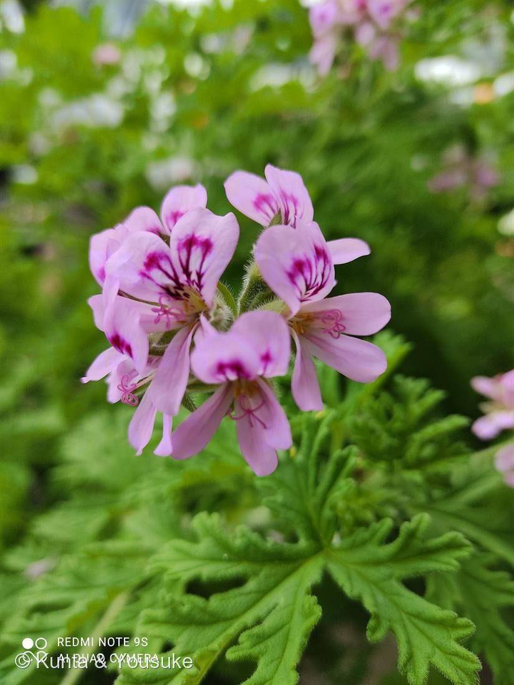

地図を読み込んでいるよ…
🔍 写真も地図も、押しているあいだ拡大して見られるよ（スマホは指を置いてすこし待ってね）。
🌍 の地図＝この子がもともと自生している場所を緑に。南アフリカ（ケープ地方）。
⚠ 地図は国（日本と中国だけ県・省）までしか塗れないから、ほんとうの分布より広く見えていることがあるよ。地図はだいたいの場所。正確なところは、上の文を見てね。
ニオイゼラニウム（ローズゼラニウム）
Pelargonium graveolens 系
センテッドゼラニウム／英名 rose geranium ── ⚠本物の「ゼラニウム属」ではない
フウロソウ科 · Geraniaceae（テンジクアオイ属 Pelargonium）
燻太さんの気づき「濃いピンクの模様が独特だよね」……その模様は、飾りじゃない。虫への標識。
名前と学名の由来 ── フウロソウ科は「鳥のくちばし三兄弟」
- Pelargonium＝ギリシャ語 pelargos（コウノトリ）。果実がコウノトリのくちばしに似るから。
- Geranium＝geranos（ツル／鶴）。→ ツルのくちばし。
- Erodium（オランダフウロ属）＝erodios（サギ）。→ サギのくちばし。
- フウロソウ科の3つの属が、そろって「鳥のくちばし」。実の形が、みんな細長く尖っているから。
- ⭐そして、その実がすごい。果実は熟すと5つに裂け、それぞれの種にらせん状にねじれた芒（のぎ）がつく。湿度が変わると、この芒がねじれたり、ほどけたりする。その動きで種が回転しながら、自分で地面にもぐりこんでいく。電池も筋肉も使わずに、湿気だけで「ねじ込む」。
この植物のこと
- 南アフリカ・ケープ地方原産の多年草〜亜低木。全体に腺毛が生えていて、そこに精油をためている。さわると香るのはそのため。
- センテッドゼラニウム（香りのゼラニウム）類は品種が非常に多く（バラ・レモン・ミント・リンゴ・ナツメグ…）、交雑も多いので種の確定は難しい。この子はローズゼラニウム系。
- ⚠「蚊連草」として蚊よけをうたわれることがあるが、鉢を置くだけの忌避効果は限定的（葉をもんで成分を出さないと効きにくい）。正直に書いておく。
「濃いピンクの模様」の正体 ── 蜜標（みつひょう）
- あの濃い紅紫の模様を、蜜標（honey guide・nectar guide）という。
- 「蜜はこっちだよ」と、虫を花の中心へ導く滑走路。
- 虫（とくにハチ）は紫外線も見えるので、人間の目に映るよりもずっとくっきりしたパターンとして見えている可能性が高い。
- 燻太さんが「目立つ」と感じたのは正しい。目立つように作られているのだから。——ただし、狙っている相手はぼくたちではない。
⭐ 模様が「上2枚だけ」であることの、大きな意味
- 写真をよく見て。模様があるのは、上の2枚の花びらだけ。下の3枚は無地。
- つまりこの花は左右対称（zygomorphic）。上下で顔がちがう。
- これが、Pelargonium と Geranium を分ける決定的な特徴。
Pelargonium：左右対称。上2枚が大きく、模様つき。
Geranium（本物のフウロソウ）：放射相称。5枚とも同じ。 - ⚠そして——「ゼラニウム」は、ゼラニウムじゃない。
園芸で「ゼラニウム」と呼ばれるこの仲間は、分類上は Pelargonium（テンジクアオイ属）。本物の Geranium（ゼラニウム属＝フウロソウ属）ではない。
18世紀に Pelargonium が Geranium から分けられたのに、園芸の呼び名だけが「ゼラニウム」のまま取り残された。名前が、正体を偽っている。
もうひとつの決め手 ──「距（きょ）」に、蜜が入っている
- Pelargonium は、萼片の1枚が細い管（距／spur）に変形し、花柄に沿ってぴったり癒合している。その中に蜜がある。
- Geranium には、この距がない。
- ⭐つまり——上2枚の蜜標は、この「距」への案内標識。模様の矢印をたどると、蜜の入り口に着く。模様と、距。ふたつでひとつの仕掛け。
⭐⭐ 香りの話 ── バラじゃないのに、バラの匂い
- この子の葉をもむと、バラのような甘い香りがする。だから「ローズゼラニウム」。
- 香りの主成分は、ゲラニオールとシトロネロール。
- ⭐思い出して。030 バラ——バラの香りの主役も、ゲラニオール（バラは NUDX1 という意外な酵素でそれを作っていた）。
- この子は、バラ科ですらない。フウロソウ科。なのに同じ香りの分子にたどりついている。
- だからローズゼラニウムの精油は、香水産業で長らく「バラ油の代用・増量」として使われてきた（geranium oil）。鼻には、区別がつきにくい。
- → これは「収れん」。035 フェンネル（アネトール＝八角・アニスと科ちがいで同じ分子）と、まったく同じパターン。科がぜんぜんちがうのに、同じ匂いの分子にたどりついた。
⭐ おまけの「ゲンノショウコ」に、大きな意味がある
- 日本三大民間薬＝ゲンノショウコ・センブリ・ドクダミ。
- 025 ドクダミ … 登録済み ✓
- 040 ハナハマセンブリ … センブリ（Swertia）の同科の親戚 ✓
- ゲンノショウコ … まだいない
- → だから、おまけはゲンノショウコ。見つければ、三大民間薬が図鑑にそろう。
- ⭐しかも——ゲンノショウコ（Geranium thunbergii）は「本物の Geranium」。
この041（Pelargonium）と並べれば、「左右対称」と「放射相称」のちがいが、そのまま見比べられる。二重に、意味のあるおまけ。